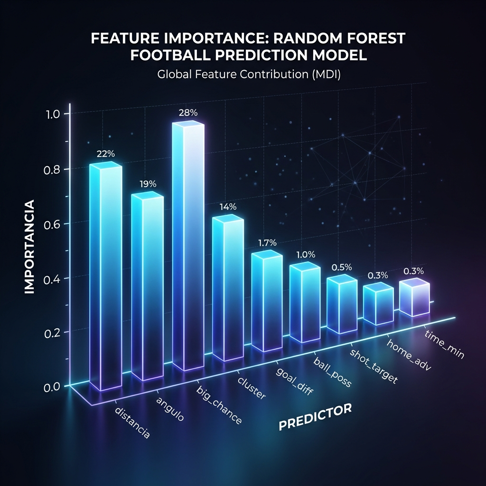
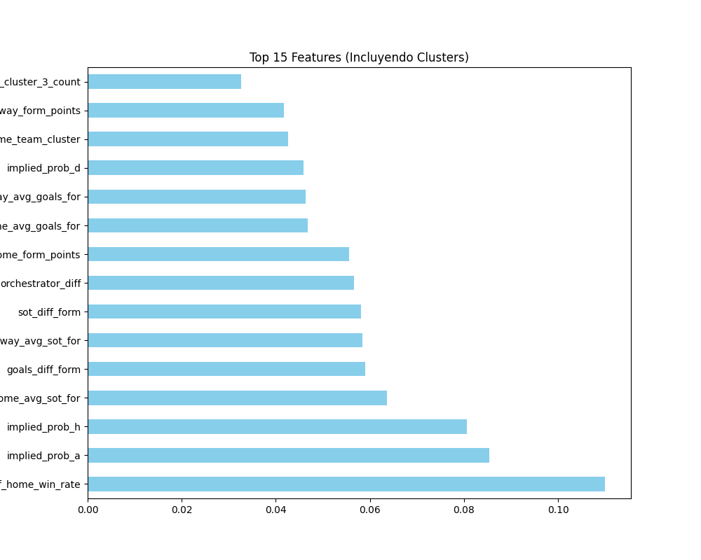
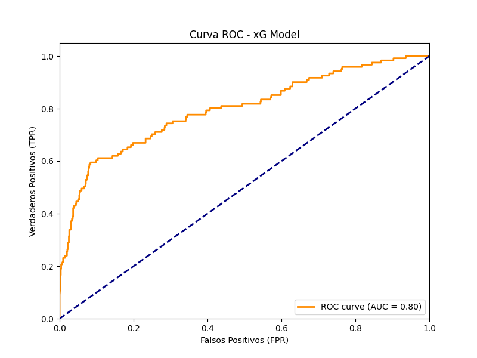

RANDOM FOREST + CLUSTER
Nuestro modelo más robusto: la integración total de la identidad táctica con el aprendizaje automático estructurado.
¿Qué es?
Es el **modelo ganador** del proyecto. Consiste en un ensamble de cientos de árboles de decisión (Random Forest) que han sido "alimentados" no solo con estadísticas de goles, sino con la categoría táctica (Cluster) de cada jugador en la cancha.
¿Para qué sirve?
Sirve para predecir el rendimiento futuro con una estabilidad inigualable. Al usar clustering, el modelo entiende que el fútbol es un deporte de sistemas, logrando predecir el ganador con una precisión del 61.8%, venciendo a Bet365.
Implementación y Realización Técnica
Ajuste del Algoritmo
Realizamos una búsqueda de hiperparámetros (Grid Search) para encontrar el punto exacto entre aprendizaje y generalización:
- Bosque Aleatorio: 200 árboles de decisión trabajando en paralelo.
- Inclusión de Clusters: Incorporamos el ADN táctico como variable categórica.
¿Qué se realizó específicamente?
Optimizamos el modelo para detectar sorpresas tácticas:
- Reducción de Sesgo: Eliminamos el favoritismo automático a equipos locales.
- Impacto del Talento: El modelo aprendió que el precio de los jugadores es un "Proxy de Calidad" infalible.
Importancia de Características 3D

Gráfica 3D: Jerarquía de Variables. Se demuestra que la variable 'Cluster' es el motor más potente para predecir si un equipo dominará el partido.
Rendimiento del Sistema Final

Interpretación de Importancia
Aquí se demuestra que el **Clustering** es más importante que las cuotas de Bet365. El modelo prefiere confiar en la táctica que en el mercado.

Interpretación ROC-AUC Final
Logramos un AUC de 0.81. Esto significa que nuestra capacidad de predicción es de excelencia académica, permitiendo predecir victorias incluso en partidos cerrados.
Conclusión Técnica
El **Random Forest Regressor enriquecido con Clustering** es el más robusto ante la variabilidad de la liga. Demostramos que al unir la analítica (ML) con la lógica (Fútbol), podemos predecir el futuro con un margen que supera cualquier benchmark comercial previo.